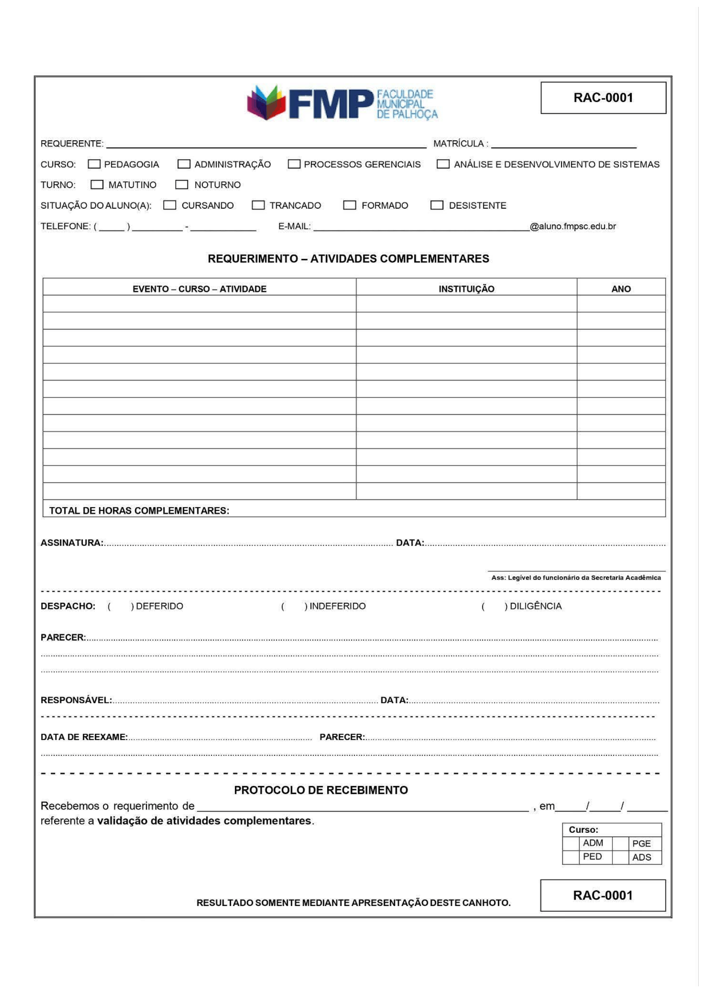
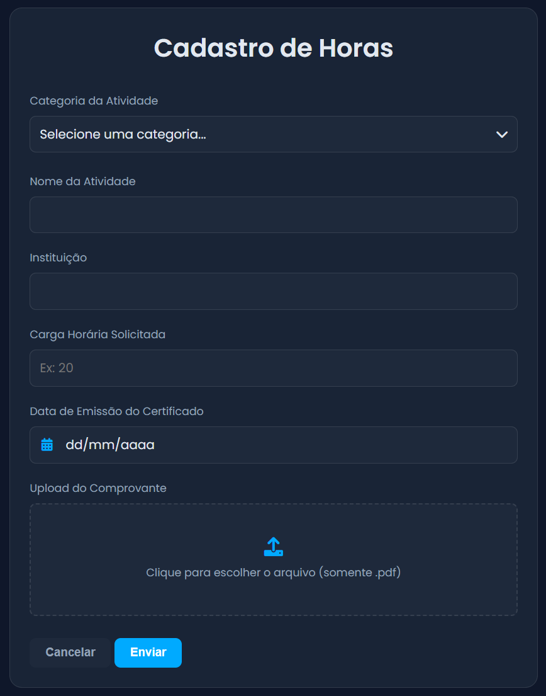

Desenvolvimento de uma solução web para centralização e gestão de atividades complementares no ensino superior.

Autores: Leonardo de Oliveira e Maria Eduarda Schmidt
Orientadoras: Profª Msc. Simone Regina da Silva e Profª Daniela Amorim
As atividades complementares fazem parte da formação acadêmica no ensino superior e exigem registro, validação e acompanhamento ao longo do curso. No contexto observado, esse processo ainda ocorria de forma manual e descentralizada, com uso de documentos físicos, entregas presenciais e controles paralelos.
Principais necessidades
Principais necessidades
Objetivo Geral: desenvolver um sistema web para centralizar, acompanhar e validar atividades complementares.
Cadastro remoto com upload de comprovantes.
Histórico e status visíveis ao aluno.
Aprovação, ressalvas e reprovação pelo coordenador.
Visão administrativa para secretaria e gestão acadêmica.
Pesquisa aplicada, exploratória e descritiva, com abordagem qualitativa. O objetivo foi compreender a realidade da FMP e suas regras, como a Resolução nº 004/2024.
Realizadas com representantes dos setores envolvidos para identificar dores no fluxo manual e expectativas para o sistema.
Estudo dos regulamentos da FMP, formulários físicos e critérios de validação das atividades acadêmicas, profissionais e socioculturais.
Acompanhamento do fluxo in loco para mapear gargalos, redundância informacional e pontos de falha no processo manual.


Mapeamento dos ganhos diretos com a transição tecnológica proposta pelo projeto.
| Critério | Processo Manual (Antes) | Sistema SHC (Depois) |
|---|---|---|
| Cadastro / Envio | Requerimento físico (RAC-0001) / Papel. | Formulário digital / Upload direto de PDF. |
| Retrabalho / Erros | Elevado (transcrição para ERP) / Perda. | Reduzido / Banco de dados relacional. |
| Acompanhamento | Obscuro; dependente da secretaria. | 100% visível pelo aluno via Dashboard. |
| Tempo de Resposta | Lento; fila de papel em malotes. | Fluxo digital imediato, ágil e auditável. |
Front-end (Apresentação)
HTML5, CSS3, JavaScript. Foco em usabilidade e design responsivo.
Back-end (Aplicação)
PHP 8.x estruturado sob o framework Laravel. Autenticação via Sanctum.
Dados & Infra (Camada de Dados)
PostgreSQL baseado na Modelagem DER. Versionamento com Git/GitHub.
Uso intensivo de UML, Diagrama de Classes, Casos de Uso e DER para garantir integridade referencial antes de iniciar a codificação do MVC.
Arquitetura modular planejada para permitir futuras integrações bidirecionais, via APIs REST, com sistemas acadêmicos.
O SHC protege dados acadêmicos com autenticação, permissões por perfil, validações de arquivo e boas práticas do Laravel.
Sanctum garante login e permissões conforme o tipo de usuário.
Comprovantes em PDF, com limite de tamanho e vínculo ao aluno.
Eloquent ORM reduz riscos de SQL Injection.
HTTPS, LGPD e criptografia previstos para implantação final.
Foi realizado um teste baseado em observação de tarefas reais em ambiente controlado, validando o funcionamento dos casos de uso, navegação e requisitos não funcionais.
Alta aceitação. Validação total do CRUD. A navegação intuitiva, com glassmorphism e UX limpa, facilitou o upload de comprovantes e o acompanhamento sem necessidade de manual extensivo.
Durante o teste, notou-se fricção no primeiro login do aluno. A tela foi ajustada para exibir orientações claras sobre cadastros institucionais pré-existentes.
Arquitetura multi-tenant projetada para licenciamento flexível direcionado a IES de pequeno e médio porte.
SaaS na nuvem: acesso ao sistema, manutenção, suporte e atualizações.
On-premise: implantação e uso vitalício na infraestrutura local da IES.
O ROI para a IES é justificado pela redução de custos com papel e horas operacionais.
O desenvolvimento do SHC consolidou um produto de software robusto que centraliza envios, auditorias e relatórios de horas complementares.
Abolição de planilhas dispersas, substituídas por um ambiente relacional rastreável que oferece mais autonomia ao discente.
Testes em larga escala, API pública para integração com sistemas acadêmicos, notificações por push/e-mail e implantação institucional.